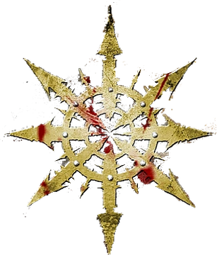
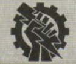
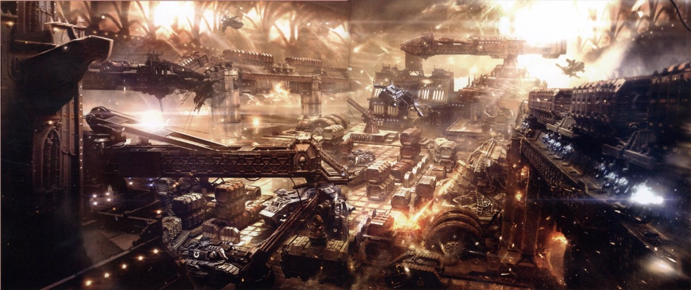
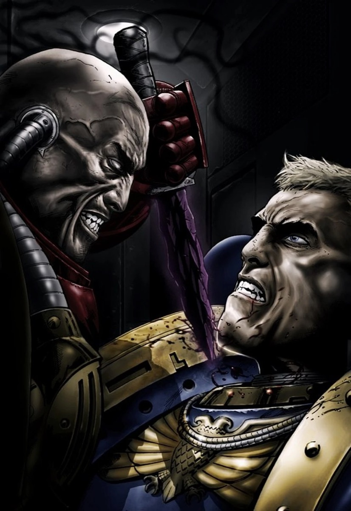

Battle of Calth
| Battle of Calth | |
|---|---|
| Calth Atrocity, part of the Horus Heresy | |
 The Ultramarines fleet at high anchor, struck by the Word Bearers above Calth | |
| Date | 007.M31, in the opening years of the Horus Heresy |
| Location | Calth, Veridian System, Ultramar, Segmentum Ultima |
| Result | Ultramarines survived, at near-ruinous cost. Calth's biosphere destroyed. The Ruinstorm was raised and Ultramar cut off from Terra |
| Belligerents | |
| Loyalists | Traitors  Daemons |
| Commanders and leaders | |
| † Killed in action · (WIA) Wounded | |
| Strength | |
 Skitarii cohorts | |
| Casualties and losses | |
| Millions of civilians dead; the biosphere of Calth destroyed and Ultramar cut off from Terra by the Ruinstorm. | |
The Battle of Calth, also the Calth Atrocity, was a treacherous attack on the Ultramarines Legion by the Word Bearers in 007.M31, at the order of the Warmaster Horus. It was fought above and on the agri-world of Calth in the Veridian System of Ultramar. The Ultramarines were gathered there for what they believed was a joint campaign against Ork warbands. The Word Bearers, who had by then turned to the worship of the Ruinous Powers, struck without warning.[1][2]
The Ultramarines survived and the Word Bearers failed in their purpose of destroying the Legion. The attack nevertheless achieved its strategic aim. Roughly half of the Legion was dead or injured, its fleet was wrecked, and the Warp storm known as the Ruinstorm, raised by a ritual that Erebus performed on the surface of Calth, closed over the Eastern Fringe and isolated Ultramar from Terra for some years. In the last hours of the battle the Word Bearers also turned the planet's orbital defences on the Veridian star, which flared and stripped away Calth's atmosphere. The surviving people of the world went underground. The fighting there, between the surviving Ultramarines and the Traitors who followed them down, is called the Underworld War.[1]
Background
[edit]Khur and Monarchia
[edit]The enmity between the two Legions dates to 963.M30. During the Great Crusade the Word Bearers' primarch Lorgar had led his Legion to preach the divinity of the Emperor of Mankind, and the Legion's delays in conquering worlds so that they could build temples to him had drawn attention at Terra. The Emperor sent Malcador the Sigillite and Roboute Guilliman to correct Lorgar. On the world of Khur, the Ultramarines destroyed the city of Monarchia, which the Word Bearers had raised in the Emperor's honour, and the whole XVII Legion was made to kneel in its ashes. The Ultramarines took no pleasure in the task, and it was intended as a lesson in the Imperial Truth. The Word Bearers never forgave it.[1]
The summons
[edit]In 005.M31 Horus sent a number of Legions to distant campaigns, among them the Blood Angels to Signus and the Dark Angels to Tsagualsa. The Ultramarines and Word Bearers were ordered to muster at Calth to destroy an Ork empire, the Ghaslakh, whose threat the Warmaster had exaggerated. Guilliman gathered the Legion's scattered forces at Saturn and left the Sol System only a few months before news of the Isstvan atrocity reached the Emperor. The state of the Warp led his fleet to Calth by a route that hid it from any attempt to recall it.[1][2]
The Word Bearers, delayed by the slaughter at Isstvan III and the Drop Site Massacre, came last. The commander of the force was Kor Phaeron, First Captain of the Legion, with the Dark Apostle Erebus and a fleet of nearly seventy capital ships. Lorgar directed the attack from his flagship, the Fidelitas Lex. Kor Phaeron had planned the attack with great care. He meant to destroy the Ultramarines' fleet and Legion in their moment of greatest vulnerability, and to give Lorgar the humiliation of Guilliman that he wanted.[2]
Calth
[edit]Calth was among the most promising worlds of Ultramar. It was an agri-world whose factory output would, within a few decades, have rivalled that of Macragge. Its people were planning a superorbital ring like the one that encircled Terra, and its orbital yards were already among the largest in the sector. The fleet of the XIII Legion lay at high anchor in them, cold and under maintenance, with its voidships' power plants and shields at minimum for the loading of stores.[1]
The battle
[edit]Portents
[edit]There were warnings, which went unheeded. Vox traffic was interrupted by what was called solar distortion. A voice was heard chanting on the orbital data link. Several of the Ultramarines who had been Librarians before the Council of Nikaea suffered pains behind the eyes. A Mechanicus server named Uhl Kehal Hesst, who watched the world's data from the orbital tower at Kalkas Fortalice, found that corrupt code was spreading in the planetary noosphere. The tech-priests reported it to Guilliman as an annoying fault. In truth the Word Bearers' cult echelons were feeding the names of eight daemons into the Mechanicus cogitators, and the code grew once it was read. Eight is the sacred number of Chaos.[2]
The offering
[edit]At the same time Erebus went down to Calth's surface to the Satric Plateau, 2,000 kilometres north of Numinous City. A strike team under the Gal Vorbak Essember Zote had laid a circle of black stones taken from the slopes of Isstvan V. The Tzenvar Kaul cult carried stasis flasks into it holding the gene-seed of all the Legions that had fought at Isstvan, loyalist and traitor. When the moon rose into alignment Erebus began the rite that would raise the Ruinstorm, and sent word to the fleet in orbit that the time had come.[2]
Betrayal in the anchorage
[edit]The first blow was struck at a dinner aboard the Ultramarines vessel Samothrace. Captain Sorot Tchure of the Word Bearers, a guest of Honorius Luciel of the 209th Company, told his friend that he had learned a lesson at Isstvan about betraying those who trust you. Then he shot him through the chest. The Word Bearers killed the officers of the company, who were offered as the first sacrifice of the battle.[2]

The great blow was the Campanile, an old fleet tender that the Word Bearers had taken in the outer system, killing all aboard it. Its codes were accepted by the orbital defences. It accelerated suddenly, plunged into the anchorage and ploughed through the yards, vaporising docks, shipyards, and the data engines that held the planet's noosphere together. More than 35,000 men and women died in the power core alone. Debris from the wreck and from the burning yards fell on the planet for hours. The Mechanicus network died with a shock that killed Hesst through the neural link, and Calth's planetary defence grid fell silent.[1]
The Word Bearers fleet then opened fire. The Grand Cruiser Infidus Imperator, the flagship of Kor Phaeron and once an Ultramarines vessel, destroyed the battle-barge Sons of Ultramar in one salvo, and the rest of the fleet followed. Most of the Ultramarines' ships were cold at anchor and needed some fifty minutes to rouse. They were shot at their moorings. Guilliman, aboard the flagship Macragge's Honour, at first believed that the Word Bearers had mistaken the disaster for an enemy attack. When he spoke to Lorgar over a failing vox link, Lorgar cursed him and broke the link. Guilliman ordered his sons to defend themselves with every weapon they had.[2]
The planetary defences
[edit]Word Bearers agents sailed the Samothrace into the Zetsun Verid Fleet Yard, which the Traitors had spared on purpose. Its data engine could replace the one destroyed, and Dark Mechanicum adepts restored it. This gave the Word Bearers the planetary defence grid, with its 962 orbital platforms and the weapon pits at the poles. They used it to destroy the world of Verida Forge and a star fort at the Mandeville point, and to pick off any Ultramarines ship that tried to raise shields. By the end of the first hours the fleet of the XIII Legion had been reduced to about one fifth of its strength. The orbital platforms were boarded in desperate fighting, in which the Solar Auxilia of Calth made the attackers pay. On one platform, Lord Marshal Turnus ordered his plasma reactor overloaded, and the platform burned for a moment as a small star.[2]

Retaking the flagship
[edit]The Macragge's Honour was boarded and the bridge destroyed. Marius Gage, First Chapter Master of the Legion, retook the auxiliary bridge with Shipmaster Ouon Hommed, who had been rescued from the Sanctity of Saramanth. Guilliman had gone to the Zetsun Verid Yard with a small killing force. There he fought Kor Phaeron, tore out one of the First Captain's hearts and left him for dead. The First Captain was recovered by his warriors and teleported away. The Primarch's force took the master control room of the yard.[2]
The surface
[edit]On the surface the Ultramarines fought on for some hours with their reserves, the Imperial Army regiments of Calth. The cities of Numinus and Lanshear were fought over street by street. Captain Remus Ventanus of the 4th Company led a push on the guildhall of the Cargo Handling Guild at Lanshear, where the tech-adept Edv Tawren, Hesst's deputy, uploaded a kill code to the defence grid. In the first twelve hours almost 100,000 Ultramarines died, and millions of civilians with them. Warp creatures were seen on the ground for the first time in the war. Many of the former Librarians of the Legion, who had given up their psychic arts at Nikaea, found that they could no longer help against them.[1]
The Imperial Army and the Ultramarines fought bravely with the means that they had. Among the Word Bearers' forces were Gal Vorbak, warriors possessed by daemons, who were first seen at Calth. Their Titans and the Dark Mechanicum fought beside them. Hol Beloth, a Word Bearers commander, led the strike on the guildhall at Lanshear, and the loyalists lost the kill code for a time before it was recovered.[2]
The Star
[edit]As the Ultramarines retook the defence grid, the Word Bearers had already turned its weapons on Calth's sun. The Veridian star, bombarded, changed from bright yellow to a blue sick glare. Its photosphere was torn, and it threw a series of flares that stripped the planet's atmosphere and filled the surface with lethal radiation. From orbit, Guilliman saw the star about to collapse. Ventanus broadcast a warning to the planet. Soldiers and civilians took shelter in the subterranean arcologies that the agri-world had been built with, where the food crops were grown. Millions reached them. The surface of Calth would not be habitable again for many years.[1]
The victory was therefore a pyrrhic one. By the time the fleet left the system, the Ultramarines counted 119,422 Astartes dead and a further 28,392 unfit for service. Few of the Chapters at Calth could muster a quarter of their strength. Some were so reduced that they were folded into others and struck from the Legion's order of battle. The wrecks of the ships destroyed at Calth still circle the Veridian star.[2]
Aftermath
[edit]The Ruinstorm
[edit]Erebus completed his rite on the surface. The Warp, which had been uneasy for a standard year, rose to a storm. It closed round the Veridian System, and Guilliman had hours in which to leave if he did not wish to be trapped. The Ruinstorm spread over the Eastern Fringe and cut the Five Hundred Worlds off from the rest of the Imperium. No astropathic message could cross it. The Navigators of Ultramar could not see the light of the Astronomican. It was a barrier that Horus needed. The Ultramarines could not join the loyalists in the war, and Terra was left alone.[1]
The lesson of Calth
[edit]Calth was the first occasion on which Astartes fought daemons in realspace in numbers. The Ultramarines concluded that by accepting the decrees of Nikaea and giving up their Librarians they had given up their one effective weapon against them. Guilliman afterwards petitioned that the Librarius be restored. He did not obtain it until the end of the Heresy, when he reformed the Legions at the Second Founding.[1][3]
The Furious Abyss
[edit]The Word Bearers had planned a second blow. A prototype battleship, the Furious Abyss, built by the Dark Mechanicum, was to reach Macragge, the Ultramarines' homeworld, and destroy the planet, the two Chapters of the Legion that garrisoned it, and the gene-seed stores of the Fortress of Hera. The ship was intercepted in the void by a scratch force under Captain Lysimachus Cestus, and destroyed. Every man of the force was killed.[2] This attack was part of the wider Shadow Crusade.
The recruitment of Rubio
[edit]During the retreat to the arcologies, the Death Guard loyalist Nathaniel Garro reached Calth on a secret mission for the Regent of Terra. He found the Ultramarines' 21st Company dug in at a railway tunnel near Numinus City, and recruited the Codicier Tylos Rubio, who had been forced to use his psychic power in defence of his company. Rubio left the planet with Garro. He became one of the Sigillite's knights-errant, and was later counted among the founding members of the Grey Knights.[2]
Accounts differ on how long the surface battle lasted. The chronicles of the Ultramarines say that it ended within a day of the first blow, a moment the Legion later called Mark Zero. The log of Garro, recorded after the event, says that the 21st Company had been dug in for days.[1]
The Underworld War
[edit]The Word Bearers' forces on the surface took shelter underground like the loyalists. Ventanus swore that the Ultramarines and their allies would fight until every Traitor on Calth had been destroyed, and the war of the arcologies began. It was fought in tunnels, flooded caverns and agri-vaults for ten solar years, from 007 to 017.M31, until the remnants of the Ultramarines fleet returned to the Veridian System and Guilliman's promise to return to Calth was kept. The war is remembered by the Ultramarines as one of the cruellest fought in their history, a struggle conducted without light, supply or hope of relief.[2]
Legacy
[edit]Calth remains an Ultramarines holding. Its people lived in the arcologies for generations, since the surface stayed unfit for habitation for many years. The wrecks of the fleet circle the star as silent tombs. The Imperial Cult counts the planet's dead among the martyrs of the Heresy, and Ultramarines chroniclers hold the battle to be the worst wound the Legion ever took.[4]
Timeline
[edit]| Date | Event |
|---|---|
| 963.M30 | Roboute Guilliman and the Ultramarines raze Monarchia on Khur; the Word Bearers are made to kneel in its ashes. |
| c. 004–005.M31 | Kor Phaeron and Erebus plan the attack; the Word Bearers' cults infiltrate Calth.[a] |
| 005.M31 | Horus orders the Ultramarines and Word Bearers to muster at Calth against the Ghaslakh Orks; Guilliman leaves the Sol System. |
| 005–006.M31 | The Word Bearers fight at Isstvan III and the Isstvan V, and arrive at Calth last. |
| 007.M31 | Sorot Tchure murders Honorius Luciel aboard the Samothrace; the Campanile rams the anchorage. |
| 007.M31 | The Word Bearers fleet opens fire and seizes the orbital defence grid; four fifths of the Ultramarines fleet is lost. |
| 007.M31 | Guilliman wounds Kor Phaeron at the Zetsun Verid Yard; Marius Gage retakes the Macragge's Honour. |
| 007.M31 | Fighting at Numinus and Lanshear; Remus Ventanus secures the kill code for the defence grid. |
| 007.M31 | The Veridian star is bombarded and flares; the people of Calth flee to the arcologies. |
| 007.M31 | Erebus completes the rite on the Satric Plateau and raises the Ruinstorm. |
| 007.M31 | The Furious Abyss is destroyed before it can reach Macragge; the Shadow Crusade begins. |
| 007.M31 | Nathaniel Garro recruits Tylos Rubio on Calth for Malcador the Sigillite. |
| 007–017.M31 | The Underworld War in the arcologies of Calth. |
| 009.M31 | Guilliman proclaims the Imperium Secundus at Macragge. |
| 021.M31 | The Second Founding restores the Librarius that Guilliman had sought after Calth. |
See also
[edit]Notes
[edit]- ^ Date estimated from the sequence of events.